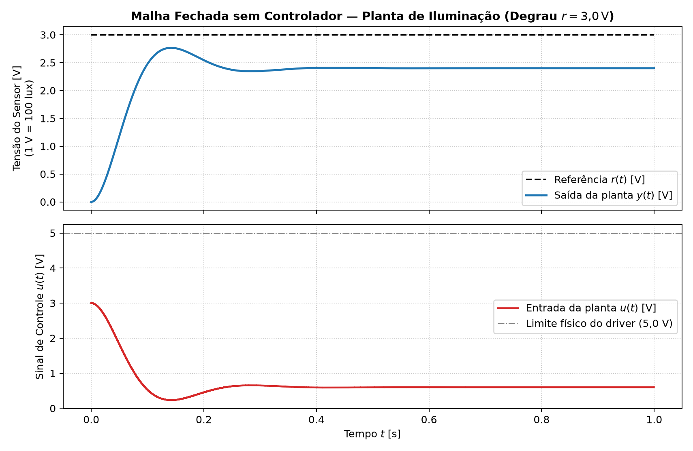
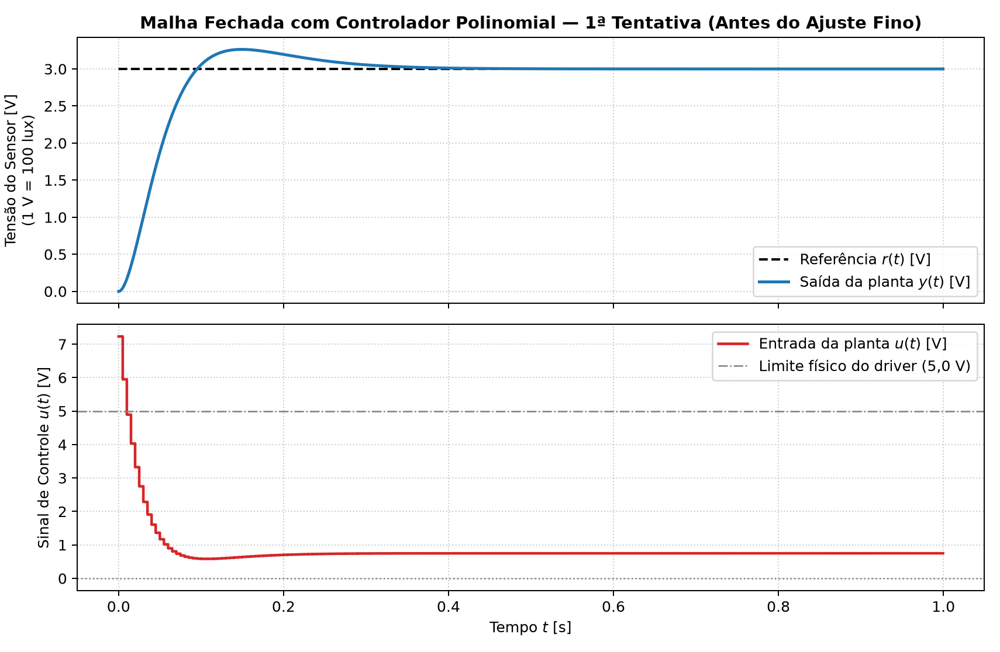
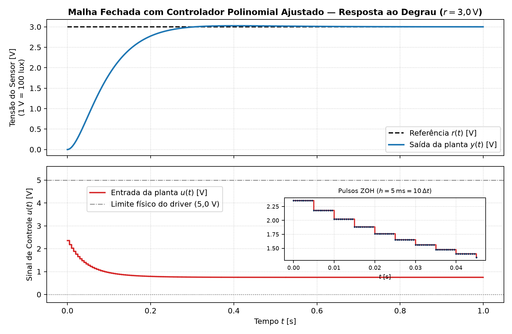
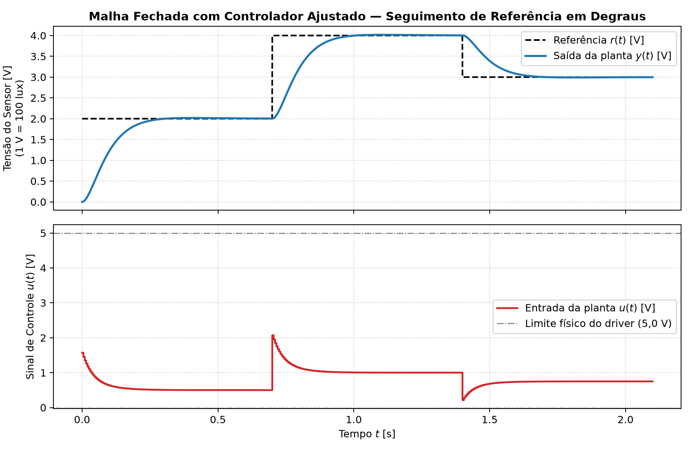

Resumo Técnico do Projeto
Planta Contínua (Driver LED τ₁ = 0,05 s + Sensor LDR τ₂ = 0,15 s)
G(s) = 4,0 / [(0,05s + 1)(0,15s + 1)] = 533,33 / (s² + 26,67s + 133,33)
Discretização ZOH (τ_min = 0,05 s · Δt = 0,5 ms · h = 5 ms)
G(z) = (0,006378z + 0,006101) / (z² − 1,872054z + 0,875173)
Controlador Polinomial (Polos −10, −10, −25, −25 rad/s + Modelo Interno z−1)
C(z) = (0,785669z² − 1,469869z + 0,686831) / (z² − 1,800410z + 0,800410)
| Métrica (Degrau 3 V) | Sem Controlador | Com Controlador | Meta |
|---|---|---|---|
| Erro em regime (e_ss) | 20,00 % | ≈ 0,00 % | 0 % |
| Overshoot (P.O.) | 15,24 % | 0,88 % | ≤ 5,0 % |
| Acomodação Ts (2%) | 0,3065 s | 0,2565 s | ≤ 0,30 s |
| Controle u(t) | 0,22 .. 3,00 V | 0,75 .. 2,36 V | 0 .. 5,0 V |
Slides da Apresentação
Abrir PDF CompletoGráficos Gerados pela Simulação (Python)

1. Malha fechada sem controlador (erro de 20% e P.O. de 15,24%)

2. 1ª tentativa (−18, −30): overshoot 8,79% e u_max = 7,23 V > 5 V

3. Controlador ajustado (−10, −25): todas as metas atendidas + zoom ZOH

4. Ensaio complementar: múltiplos degraus (200 → 400 → 300 lux)